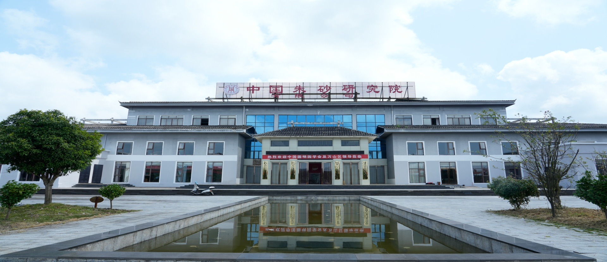
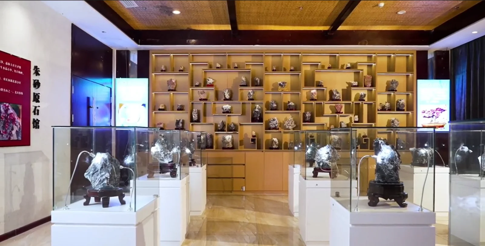
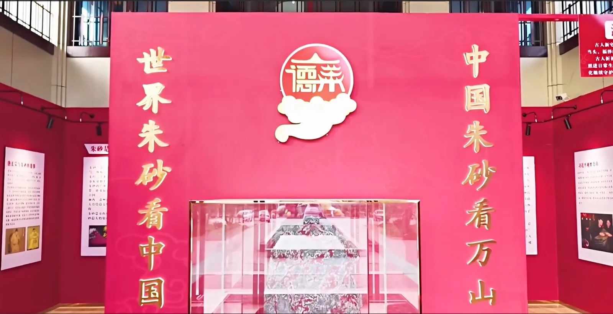
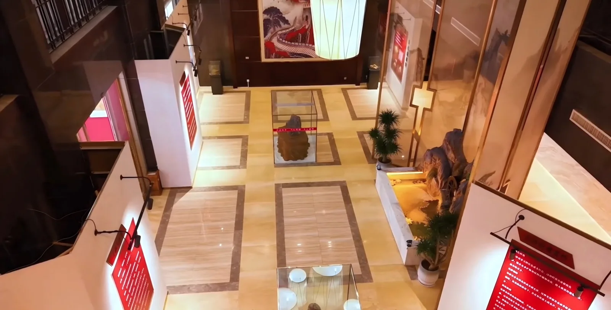

万山源脉
依托贵州万山产业链优势，建立从朱砂原料、工厂到展厅的完整链路。
Featured Collection
从日常佩戴到空间陈设，以朱砂的温润红韵串联传统技艺与现代审美。
Collection Index
九大系列、六十四件代表产品，覆盖随身饰品、案头雅器、康养关怀、非遗工艺与溯源臻选，为个人珍藏、节庆礼赠和品牌定制提供多样选择。

中国朱砂研究院 · 贵州万山
Our Heritage
让千年朱砂文化融入现代生活美学，打造东方文化符号的世界名片。
德莱云上隶属中国朱砂研究院有限公司，依托贵州万山朱砂产业源头优势，集原料、研发、文创设计、文化交流与品牌运营于一体。
5176 平方米文化场馆设有朱砂历史文化馆、应用馆、原石馆与文创馆等核心展区，让产品展示与文化体验彼此相生。
阅读品牌故事


Why Delai Yunshang
从矿物源头到当代生活，让每一件作品都有出处、有技艺、有文化，也有恰到好处的东方审美。
依托贵州万山产业链优势，建立从朱砂原料、工厂到展厅的完整链路。
承古法水飞与现代环保工艺，融合编织、雕琢、大漆与珐琅彩技法。
依托中国朱砂研究院，梳理矿物、技艺与艺术应用的文化脉络。
覆盖个人珍藏、企业礼赠、文旅伴手礼与主题文创等合作场景。
欢迎咨询产品选品、文化研学、文创定制与品牌合作。